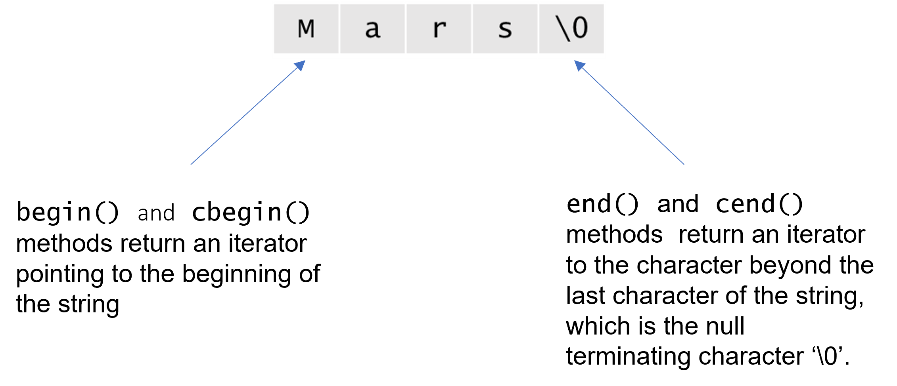
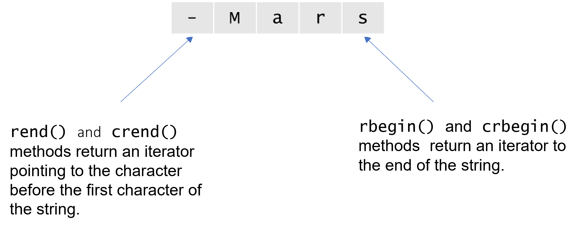

3. Deep dive
3.1 Extracting substrings
Substrings need to be extracted from strings for various purposes such as isolating some information such as getting only the day or the month from the complete date, or for the purpose of removing unnecessary parts of a string such as whitespaces of some special characters, or just taking a fixed amount of characters from the string as per some restrictions imposed and so on. The string class contains various methods to help with the same. Let us start by taking a look at the rather intuitive slice(). method.
3.1.1 Slicing
Slicing refers to the process of taking out a substring from a string using indices to indicate the beginning and ending positions of the substring which is to be extracted from the string. The string is not modified in the process and the method returns a new string object containing the slice. The basic syntax of slicing is string.slice(start, end) implemented as follows:
Generates the following output:
Here, 1 specifies the starting position of the substring and 4 indicates the index of the position right after the last element of the substring. The end index is not included in the slice. The slice() method has two overloads which gives us the option of choosing whether or not to use the start index. If we just specify one value then the start is automatically assumed to be 0 which means the slice() operator gives us end number of characters From the beginning of the string.
Gives the following output:
3.1.2 Using the () operator
The ()operator can be used instead of using the slice method just for the sake of convenience. The slice() method and the ()operator can be used interchangeably. They work in the exact same way. The above examples using the ()operator:
Generates the following output:
The ()operator generally seems more intuitive and easy to use but the slice() method has a descriptive name which can be useful for new users.
Gives the following output:
When using with only the end index the ()operator notation may seem a bit confusing as it appears that a function is being called.
3.1.3 First word/Last word
Sometimes there is a need to extract only the first or the last word from the string such as in case of extracting first and last names from the full name of a person. For such purposes the string class contains two methods: first_word() which extracts the first word from a string and returns a new string object containing that word and last_word() which extracts the last word from a string and returns a new string object containing that word. Both these methods ignore initial whitespaces in the string.
Will generate the following output:
As depicted above, the leading and trailing whitespaces are ignored by both these methods.
3.1.4 Extracting from a position
There may be a need to extract all the characters from a string starting from a specified position. If we do this using the slice() method then we will have to use the following syntax:
It can get quite cumbersome in complicated expressions. Keeping that in mind, the string class has a method from_pos() which returns a string containing all the characters starting from the specified index all the way up to the end. So the above can be written using from_pos() as follows:
The syntax is now cleaner and the name of the method from_pos() gives a self description as to what it does. This method creates and returns a new string containing characters starting from the specified position all the way up to the end. This method does not modify the string.
3.1.5 Getting n last characters
You must have encountered several situations where a either a username or the password is made up from your own information for example, the password to open you electronic payslip File may be constructed by taking the first four letters of your name then appending your employee id followed by the last 5 digits of your phone number. This situation demands slicing of strings from the from and from the back as well. While we can use the slice() method, the syntax might get a bit messy. The string class contains a method, nlast() for extracting a specified number of characters from the end of a string.
Let us consider the example mentioned earlier:
Will generate the following output:
If we use the slice() method instead we will have to write the following:
Clearly the previous approach using the nlast() is the winner here. The syntax is very concise and the name is rather descriptive which makes it more intuitive to use, plus the calculations which need to be performed for using the slice() method can be confusing.
3.1.6 Split
Sometimes extracting the characters from the string may not enough and the problem may require breaking up the string into its constituents. Consider the Email ID example again. Every person has a different username and domain name and each of them are of different lengths. Up to this point, all our methods for extracting substrings from strings depend upon the length which is unknown in this case so any of the above methods cannot be applied directly. The split() method however can come in handy here. The split() method splits the string at the character specified as an argument to the method and it returns a list of strings which consists of the individual parts of the string obtained after splitting. The original string however is not modifed. The data is copied into the substrings.
For the above mentioned problem we can use the nlast() method as follows:
Will generate the following output:
Using split() we didn't have to worry about the length of the strings or substrings. It can also prove useful in many other situations where constituents are more important than the whole.
3.2 Iteration and modification
3.2.1 Iterators
Let us first define what an iterator is. An Iterator is a pointer like object which points to an element inside a container. It provides access to the element it is pointing towards and it can be made to point to the next element in the container using the increment (++) operator. Using the iterator all the elements of a container can be accessed and modified (if it's not a const iterator). The element which the iterator is pointing towards is accessed using the '*' operator and two iterators can be compared using the '==' and '!=' operators.
Do they sound exactly like pointers? Yes they do and pointers are powerful iterators for array types but for complicated data structures more sophisticated iterators are required. However that is not our concern at the moment.
Objects of the string class can be thought of as containers which contain individual characters. The string class has methods which return iterators which can be used to iterate through a string. The different types of iterators defined for the string class are as follows:
| Iterator type | Method which returns this iterator |
|---|---|
| string::iterator | string::iterator begin() |
| string::iterator end() | |
| string::const_iterator | string::const_iterator begin() [for const objects] |
| string::const_iterator end() [for const objects] | |
| string::const_iterator | string::const_iterator cbegin() |
| string::const_iterator cend() | |
| string::reverse_iterator | std::reverse_iterator rbegin() |
| std::reverse_iterator rend() | |
| string::const_reverse_iterator | string::const_reverse_iterator rbegin() [for const objects] |
| string::const_reverse_iterator end() [for const objects] | |
| string::const_reverse_iterator | string::const_reverse_iterator crbegin() |
| string::const_reverse_iterator crend() |
- string::iterator
- It is the basic read/write iterator which can be used to traverse the string as well as write data into it.
- string::const_iterator
- It is a read only iterator which allows traversal through the string but no modifications are allowed.
- string::reverse_iterator
- It is a reverse iterator which means that as we keep incrementing it, it moves backwards through the string. This is a read/write iterator which can be used to read the contents of the string in reverse order and also write something to it. More on it in section 3.2.3
- string::const_reverse_iterator
- It is a read only iterator which allows traversal through the string in the reverse order but no modification is allowed.
You might have noticed that the methods which return iterators come in pairs. For the string::iterator we have begin() and end(). The begin() method returns a string::iterator to the beginning of the string and the end() method returns a string::iterator to one character past the last character of the string.
The cbegin() and cend() methods return string::const_iterator to the beginning and end in the same way as described above. The only difference is that the string::const_iterator is a read only iterator which means we can access the elements of the string using them but we cannot modify any element.
Now that we have covered some of the basics of iterators, let us take a look at how to use them to iterate through the string:
Will generate the following output:
3.2.2 const iterators
A const iterator is simply an iterator which is read only. It can be used to traverse through the elements of a container object (which is the 'string' object in our context) but not modify them. They come in handy when the objective is to only read the contents of the string and not modify it. The cbegin() and cend() methods return the const iterators of the string class, the string::const_iterator. Also keep in mind that the begin() and end() methods will also return a string::const_iterator when used with a const string object.
3.2.3 Reverse iterators
A reverse iterator is used to traverse through the elements of a container in the reverse order i.e., from the last element to the first. The rbegin() and rend() methods return the reverse iterators for the string class, the string::reverse_iterator. The rbegin() method returns a string::reverse_iterator to the last character of the string and the rend() method returns a string::reverse_iterator to one character before the first character of the string.
The crbegin() and crend() methods work the same as above with the only difference that instead of the string::reverse_iterator they return string::const_reverse_iterator which is a read only iterator and can only be used to read from the string not write to it.
Let us now look at a reverse iterator in action:
Will generate the following output:
Traversing the string through the reverse iterator is like traversing the reversed string.
3.2.4 const reverse iterators
A const reverse iterator is simply a reverse iterator which is read only. It can be used to traverse through the elements of a container object in the reverse order (which is the 'string' object in our context) but not modify them. They come in handy when the objective is to only read the contents of the string in reverse order and not modify it. The crbegin() and crend() methods return the const reverse iterators of the string class, the string::const_reverse_iterator. Also keep in mind that the rbegin() and rend() methods will also return a string::const_reverse_iterator when used with a const string object.
Let us take a look at an example program to illustrate the use of iterators to get a reversed string from an existing string.
Will generate the following output:
In the program above a copy of the string is first created then a reverse iterator to the string str is initialized (str_iter) and an iterator to the copy string rev is initialized (rev_iter). Moving through the string using a reverse iterator is just like moving through the reversed string. We use this fact to move through the pseudo reversed string using the reverse iterator and assign each character of the pseudo reverse string to the characters of rev while moving forwards through rev.
3.2.5 The modify method
The modify() method of the string class allows us to modify a string character by character using a function like object which is passed as an argument to this method. A function like entity in C++ can be a plain-old function, or a functor (function object), or a lambda expression. If it is a function then a pointer to the function has to be passed to the modify() method. Let us see some examples:
Will generate the following output:
We use the shift_right function to shift each character of the string to the right by three places and then the shift_left function to shift each character of the string to the left by three places to get the original string back.
We can also use predicates to specify which characters of the string are to be modified. This can be done by passing a function like entity to the the parameter pred of modify() method. The pre-requisite is that pred must be able to accept a single char as an argument and must return a boolean value. Let us take a look at an example where we replace all the lowercase characters of a string with underscores:
Will generate the following output:
The predicate we used is the C-standard library function islower() an it returns true for lowercase characters so only the lowercase characters are modified in the string using the modifier function which is a function which just returns an underscore ('_') every time it is called. Using lambda expressions can make the task even easier. Take a look at the below example:
Will generate the following output:
Here the lambda expression does the same job as the function in the previous example but is more convenient as it can be defined on the spot.
3.3 Numeric operations
Situations may arise where strings and numbers are needed simultaneously. In some situations such as while reading the content of text files the numbers which are read as strings may need to be converted to integers and sometimes composite strings may need to be formed with values plugged inside it. There is a need therefore, for conversions between numbers and strings.
The string library has several functions in it to assist with these type of conversions and more. Let us take a look at them one by one.
3.3.1 String to integer
Numbers are often stored as strings in records since they can handle values which have numeric digits and characters intermixed. In such cases a need may arise to convert the string representation to an integer in order to do some arithmetic operations on it. Take another example, if we are writing a program where we need to get user input through the keyboard then reading the input as a string makes more sense if we want to perform validation checks and if we want to inform the user what exactly went wrong if the checks fail. Say for example in a inventory management software the products which are high priority must have a product number which begins with 79. In such a case if the user enters a product number starting with 78 then it would be easier to check for the mismatch if we were taking the input as a string than if we accept it as an integer. By default the stream extraction using std::cin in C++ will numeric values from the keyboard until it encounters a invalid character after which it just stops reading and returns whatever has been read until that point without raising any errors. If we want the ability to inform the user about the error then we need to check every character of the input which can be done if the input is taken as a string.
Now after we get the input as a string containing a number from a file or from the user or from any other source, we need to convert it to an integer or a floating point value. For these purposes the string class has the methods stoi() , stoll() , stod() and stold() . The stoi() and stoll() methods are for for conversion to integeral values (specifically to int and long long values respectively) and the stod() and stold() methods are for conversion to floating point values (specifically to double and long double types).
Let us take a look at an example demonstrating user input validation:
Will generate the following output for valid integral values:
Leading spaces in the input number is deliberately added to demonstrate that the stoi() method just skips the leading and trailing whitespaces in the input string.
The following output will be generated for invalid inputs to the above program:
This demonstrates the power of the methods of the string class. If we were to read the input using std::cin >> num then the invalid values would have been ignored without our knowledge.
3.3.2 Integral values to strings
Sometimes we would like to get the string representation of numbers because individual characters of a string can be manipulated with ease. For example, we may have a function which has to return a response string by plugging some values in it which are numbers, in such a case the string representation of numbers is required. Sometimes it is required that the numbers be of a certain given fixed width and if not then some padding characters like '0' may need to be added. In such cases if we use numeric types then there is no way of keeping the leading zeros or padding with any other character.
Conversion of a numeric value to a string allows us to perform string-specific operations on the created string such as concatenation or formatting. Furthermore, an int-to-string mutation is beneficial when we need to save an numeric value as text in a file or when displaying a numeric value to the console for visual purposes. For such cases and more where numbers must be treated as strings the string library has a to_string() function built in it. This function takes a number as an input and converts it to a corresponding string object. Let us take a look at an example:
Will generate the following output:
The following example can be a part of an employee ID system which requires that the employee ID's be of a fixed width:
Will generate the following output:
Here we have used an overload of the to_string() function which also accepts a width parameter and pads extra zeros to the left if the number to be converted to a string contains less number of digits than the specified width.
3.3.3 b-string from a number
By b-string we mean a string containing the binary representation of an integral value. Such a string can be created using the bstring() function. This function can be used with a single integral value or an integral value along with a width value which will determine the number of digits the b-string must contain. Let us look at an example:
Will generate the following output:
Note the extra bits in the b-string where the width has been specified.
The string class also contains a bstring() method which returns a b-string from a string which contains a numeric value in it. A width value can be specified for this method also. Let us take a look at an example:
Will generate the following output:
And the same as above not specifying the width value gives a string with a width of just the required number of characters.
3.3.4 Number from a b-string
The btoi() and btoll() method of the string class do the reverse of the bstring() function i.e., they take a b-string and convert it into an int in case of btoi() and into a long long int in case of btoll(). Let us take a look at an example:
Will generate the following output:
3.4 Searching
Searching is one of the most basic tasks computers are used for and searching in a string is one of the most basic tasks one can think of performing using a string type. There are several methods in the string class which provide different searching capabilities to the user.
3.4.1 Counting characters
The first and the most basic method is the count() method which counts a given number of characters in the string.
Will generate the following output:
Hammingweight of a binary string is just the number of bits which are set to '1' which we can get using the count() method.
3.4.2 Checking for the existence of a query string
There can be various instances where the existence of a query string inside a string needs to be checked. We can check if a query string q appears in the string or not using the contains() method as follows:
Will generate the following output:
The contains() method can take a const char* or a string as an argument. In the example above we have used a const char*. The contains() method performs case-sensitive string matching which means that the strings "Guy" and "guy" are different. Not only the characters but even the cases should match.
If we need to perform a case-insensitive search for the query string q then we can use the containsi() method which performs case-insensitive matching. The below example demonstrates the use of the containsi() method:
Will generate the following output:
As we can see above, case does not matter when using containsi().
3.4.2 Counting the number of occurrences of query string
The number of times a query string q occurs in a string can be counted using the count() method. This is different from the count() method we discussed earlier. The count() method discussed here takes a string or a const char* as an argument and returns the number of times the query string q occurs in the string.
Will generate the following output:
The count() method performs case-sensitive string matching which means that not only the characters but even the cases should match. If case-insensitive matching is required then the counti() method can be used instead.
3.4.4 Position of first occurrence of query string
The index of the first match may be required in some cases such as if some text contains a marker after which the read must start. In such cases the search() method can be used which returns the index of the first match of the query string q in the string. The query string q can either be of string type or const char* type.
Will generate the following output:
Here we first find the starting indices of "Date: " and "--/--" and then take substrings using the from_pos() method.
The search() method performs case-sensitive searching. If we need to perform a case-insensitive search then the searchi() method should be used instead.
3.4.5 List of all occurrences of query string
A list of all the positions where the query string q occurs in the string can be obtained using the search_all() method of the string class. The query string q can be a string object or a const char*.
3.5 File I/O
File input/output is a crucial part of most programs since the programs once closed do not retain any information about the current run which may be required. The string class contains definitions of the stream insertion(<<) and stream extraction(>>) operators which allow the user to insert the contents of a string into a std::ofstream (file output stream), and extract the contents of a std::ifstream (file input stream) and put it into a string object.
3.5.1 Reading from an input stream
The stream extraction operator enables us to extract/read the contents of an input stream be it the standard input (keyboard) or a file input stream (std::ifstream) to a string object. In the first case i.e., when inserting the contents of the standard input (keyboard) to a string object, the contents can be pushed directly into the string object using the '>>' operator as follows:
Similarly, if a file is linked to an std::ifstream then the contents of the file can be read using the same stream extraction(>>) operator using the same syntax as above. Let's take a look:
Using the stream extraction(>>) operator like this reads the contents of the entire file in one go.
3.5.2 Reading contents one line at a time
As we have mentioned above the stream extraction(>>) operator reads the contents of the entire file in one go. If however, we want line by line processing, we can use the getline() function. It takes a reference to an std::istream object and a string object as parameters. It reads the contents of the std::istream object till it encounters a newline character and stores the line in the string object. It can be used as follows:
The getline() function returns true if it has succesfully read a single line and false otherwise.
3.5.3 Writing to an output stream
The stream insertion operator enables us to insert the contents of the string object to an output stream, be it the standard output (display) or a file output stream of type std::ofstream. In the first case i.e., when printing a string object on the display the object can directly be pushed into the standard output stream using the stream insertion(<<) operator as follows:
Similarly, if a file is linked to an std::ofstream then the contents of the string can be written into the file using the same stream insertion(<<) operator as follows:
Using the << and >> operators makes the File I/O operations in C++ more intuitive. Just follow the direction of the arrows and you'll get the direction of the data flow.